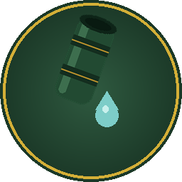
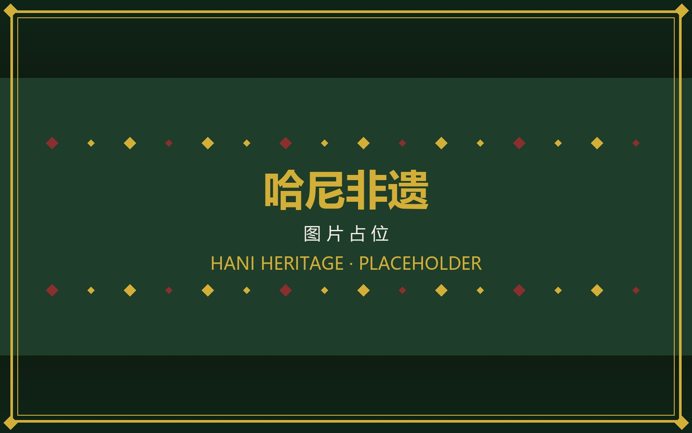

哈尼非遗
首页
历史文化
图集
互动体验
游戏
语言
AI助手
哈尼非遗 AI 助手
由大模型驱动的哈尼族文化专家，你可以问我：哈尼族有几种方言？红河哈尼梯田在哪里？也可以上传一张图片，让 AI 帮你识别其中的哈尼元素。
与 AI 专家对话需要登录 ——
立即登录

哈尼非遗小助手
竹筒倒水迎宾客 · 有问必答
你好！我是哈尼非遗小助手，精通哈尼族文化、历史、语言和梯田农耕文明。你可以直接提问，也可以点「图片」上传一张照片，让我来识别它与哈尼族的渊源。

×
图片
发送
正在为你倒水沏茶…